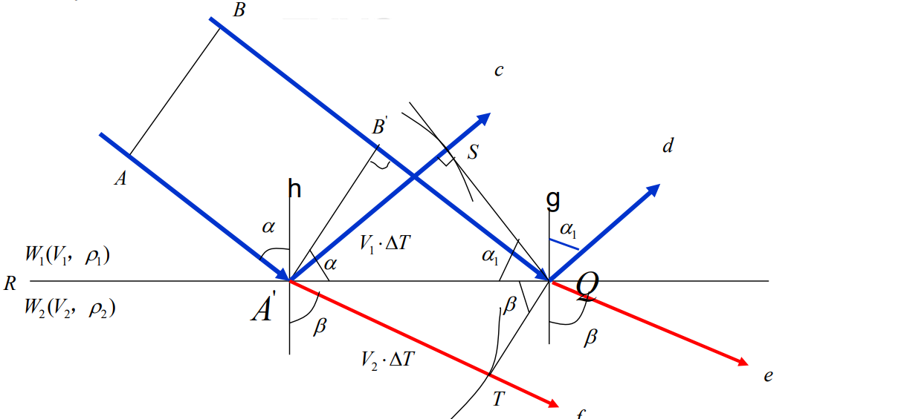

地震勘探
地震波的基本类型及传播等
地震波的基本类型
有关这一问题的回答的逻辑参考下面这个思维导图
graph LR
A[地震波的类型] --> B[体波]
A --> C[面波]
B --> D[P波]
B --> E[S波]
D --> D1[传播介质：固体、液体、气体]
D --> D2[振动方向: 与传播方向一致]
E --> E1[传播介质：固体]
E --> E2[振动方向：与传播方向垂直]
C --> F[Rayleigh波]
F --> F1[在自由界面附近并沿自由界面传播]
F --> F2[振动方向：既有垂直分量又有水平分量,沿椭圆轨迹运动]
F --> F3[传播速度：比Love波慢]
C --> G[Love波]
G --> G1[在低速夹层顶底界面之间产生的平行于界面的波动]
G --> G2[振动方向：水平面内的横向振动，实际上也是一种SH波]
C --> H[Stoneley波]
H --> H1[在两种均匀弹性介质的分界面上产生的沿分界面传播的瑞雷型面波]
H --> H2[在液体固体介质分界面总是可以形成]
H --> H3[传播速度：略小于Rayleigh波]文字版回答：
-
体波：
从弹性波场知道，在外力作用下，弹性介质中存在着两种扰动（涨缩力和旋转力）。由于涨缩力的扰动，弹性介质产生体积应变，体积应变产生的波动称为纵波（P波）；由于旋转力的扰动，弹性介质产生剪切应变，剪切应变所引起的波动称为横波（S波）。这两种波动统称为体波。-
纵波的特点：
- 纵波在介质中传播时，波的传播方向与质点振动方向一致，因此又称为线性极化波；
- 纵波的传播速度 \(V_p = \sqrt{\frac{\lambda + 2 \mu}{\rho}}\)；
- 振动的强度随着传播距离的增大而减弱。
-
横波的特点：
- 横波在介质中传播时，波的传播方向与质点的振动方向垂直；
- 质点振动在水平平面中的横波分量称为SH波，在垂直平面中的横波分量称为SV波；
- 横波的传播速度 \(V_s = \sqrt{\frac{\mu}{\rho}}\)；
- 在液体和气体中，由于剪切模量 \(\mu = 0\)，故不存在横波。
-
-
面波：
相对于体波而言，在弹性分界面附近还存在着另一类扰动。从能量上来说，它们只会分布在弹性分界面附近，故称为面波。面波又会分为瑞雷面波、勒夫面波、斯通利波。
-
三种面波：
- 瑞雷面波：质点振动轨迹沿波传播方向成逆时针方向的椭圆轨迹运动。只分布于自由界面附近并沿自由界面传播，随据表面距离的增加增幅呈现指数衰减
- 勒夫面波：质点在水平方向振动并垂直于波的传播方向。是一种在低速夹层顶底界面之间产生的平行于界面的波动
-
斯通利波：在两种均匀弹性介质的分界面上形成的类似于瑞雷型的面波。沿着固-液边界传播，或者在特定条件下也沿着固-固边界传播。斯通利波的振幅在两种接触介质之间的边界处具有最大值，并在远离接触介质时呈指数衰减
-
面波特点：
- 速度低，面波速度一般略低于横波速度；
- 能量强，在远离震源时，面波能量往往强于体波能量；
- 瑞雷面波振动能量沿垂直方向衰减快，而沿水平方向衰减慢；
- 频率低，面波主频一般在 \(10\sim 20 Hz\)；
- 存在频散现象，即波速是频率的函数。
Tip
面波的特点可以简单记为低频低速强振幅会频散
叙述面波的分类时，可以按照对应质点的运动规律+这类面波存在的条件这样的逻辑记忆
-
地震波的传播
Note
地震波的传播是一个非常丰富的话题，下面对可能考到的话题进行逐一阐述做一布防，复习时以理解为主，考试时按照对应的内容填写
如果只是宽泛的问地震波的传播：可以按照地震波传播的理论基础（3点）+ 运动学动力学（3点）+ 地质因素（5点）回答
- 地震波传播的理论基础
- 惠更斯定律：在弹性介质中，已知t时刻的同一波前面上的各点，可以把这些点看作从此时刻产生子波的新的点振源，由它产生二次扰动，经过\(\Delta t\)时间后，这些子波的包络面就是\(t+\Delta t\)时刻新的波前面
- 惠更斯-菲涅耳原理：由波前面上各点所产生的子波，在观测点上相互干涉叠加，其叠加结果就是我们在该点观测到的总扰动。
- 费马原理： 波沿走时最短的路径传播
- 视速度定理： 在射线方向观测波的传播速度，就是波在介质中传播的真速度，但是地震勘探往往是在地面观测，观测到的速度小于真速度，称之为视速度。\(V_a = V / sin \alpha\),\(\alpha\)是射线与地面法线的夹角
😡以上内容是地震波传播的理论基础
-
地震波传播的动力学与运动学
- 运动学特征：包括反射、透射、折射 、绕射。  如图所示，c为反射，d为折射，地震波里的折射多了一段滑行波的概念，就是传播到界面会沿界面滑行一段距离再折射上去
Warning
事已至此，不再赘述反射，折射透射的概念，仅作几点说明
- 下界面速度大于上界面才会出现折射
- snell 定律：\(\frac{V_1}{sin \alpha} = \frac{V_1}{sin \alpha_1} = \frac{V_2}{sin \beta}\)
- 绕射：地震波传播经过物性不连续点的时候，可以把不间断点看作震源，由这个新震源产生的扰动向四周传播，这种现象称为绕射。
-
动力学特征：包括波在弹性分界面上的波形转换和能量分配 弹性波入射弹性分界面的时候会出现波形的转换，入射纵波可能会形成反射纵波、反射横波、透射纵波和透射横波。波形相同称之为同类波，不同称之为转换波。 能量分配遵循佐普利兹方程（弹性分界面上各种波的振幅关系）
-
地震波传播时会产生能量衰减，主要包括：波前扩散、吸收衰减、 透射损失
- 影响地震波传播的地质因素
- 密度：
不同岩石具有不同密度，其波速也不同。通常密度大的致密岩石波速较大。 - 孔隙度：
一般波在流体中的速度小于骨架速度，因此孔隙度大的岩石波速较小。而且孔隙度的变化也会影响密度的变化，孔隙度增大，岩石密度相对减小。 - 孔隙填充物：
岩石孔隙中的填充物不同也会引起波速变化，\(v_{气} < v_{油} < v_{水}\)。 - 风化程度：
风化作用使岩体矿物变异，原生结构破坏，导致质点间弹性联系减弱。岩体波速随风化程度的增大而减小。 - 其他因素:
一般年代越久，埋藏越深，上覆地层压力时间越长，强度越大，孔隙度变小，密度变大，波速变大。
地震波时距关系
包括反射波和折射波时距方程和时距曲线，均方根速度、射线速度、平均速度等
- 均方根速度：把水平层状介质情况下的反射波时距曲线近似地看成双曲线时，求出的波速就是这一水平层状介质的均方根速度。 (层速度平方按照各层走时加权平均再取根号)
- 射线速度：波按照射线传播的速度(总路程除以总时间)
- 平均速度：地震波垂直穿过地层的总厚度与单程传播所需的总时间之比
上图展示了三种速度的关系，
- 当x = 0时,\(v_r = \bar v\)，随着x的增加，\(v_r\)将大于\(\bar v\)趋近\(v_\sigma\),
- 当x = h时，\(v_r = v_\sigma\)，
- 之后\(v_r\)不断趋近介质最高层速度，\(v_\sigma\)的误差也不断增加
地震勘探的野外数据采集
包括地震仪器的原理，地震勘探观测系统，地震波速测定等
地震勘探抗干扰技术
包括地震组合检波法、多次覆盖技术，地震勘探分辨率及抗干扰技术等